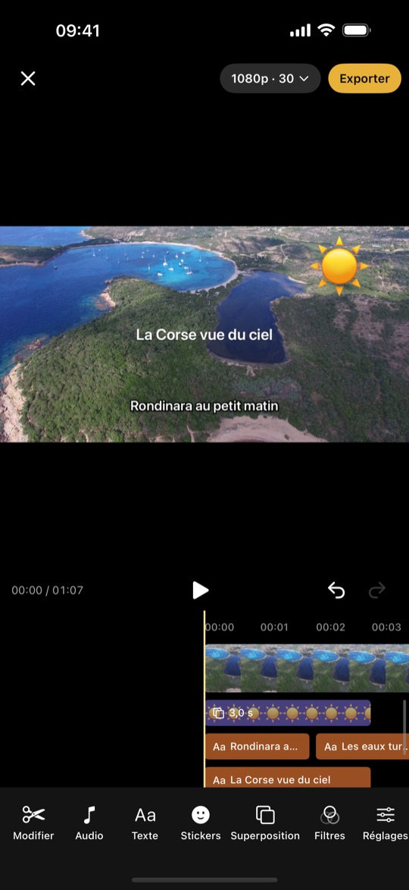
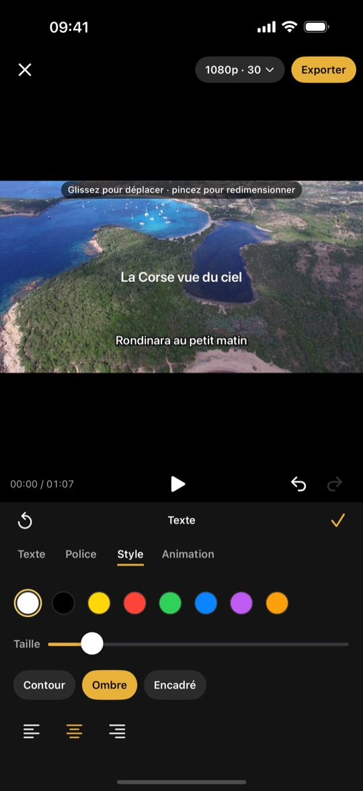
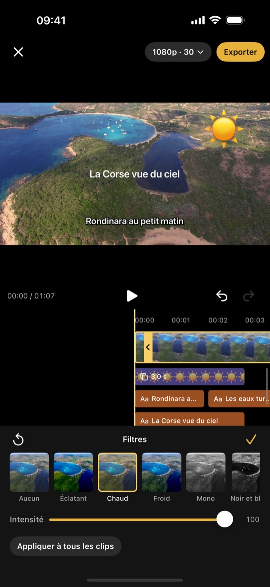
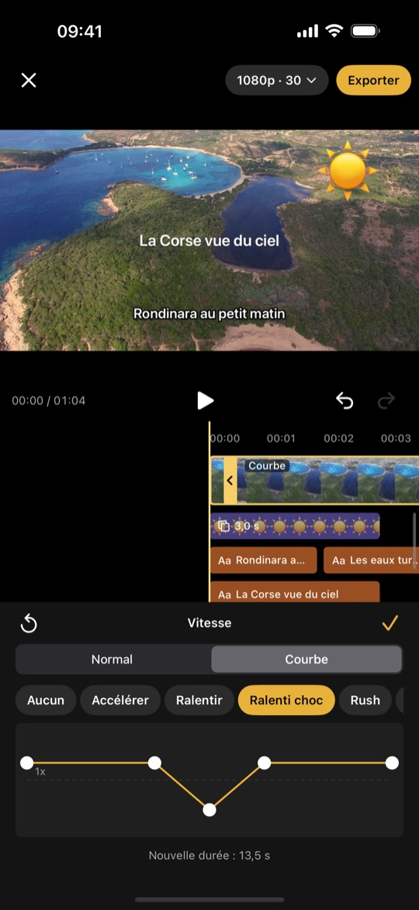
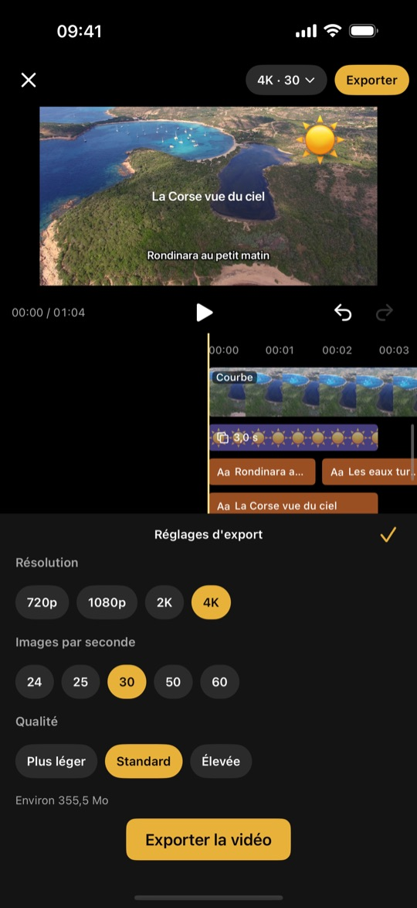

Monter
- Coupez, raccourcissez, dupliquez et réorganisez vos clips
- Transitions sur une coupe ou sur toutes
- Inversez, figez une image, recadrez, redressez
Éditeur vidéo pour iPhone
Découpez, titrez, sous-titrez, mettez en musique et exportez jusqu'en 4K. Tout se passe sur votre téléphone : pas de compte, et vos vidéos ne partent nulle part sans vous.





Les outils d'un logiciel de montage, réunis dans une app simple.
Gold Video Pro est gratuite sur l'App Store, pour iPhone.